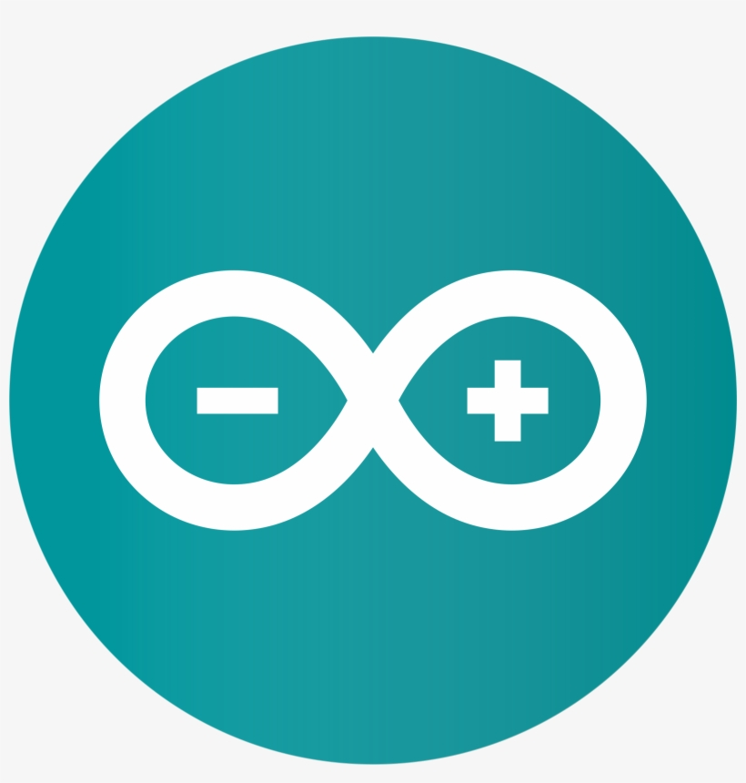
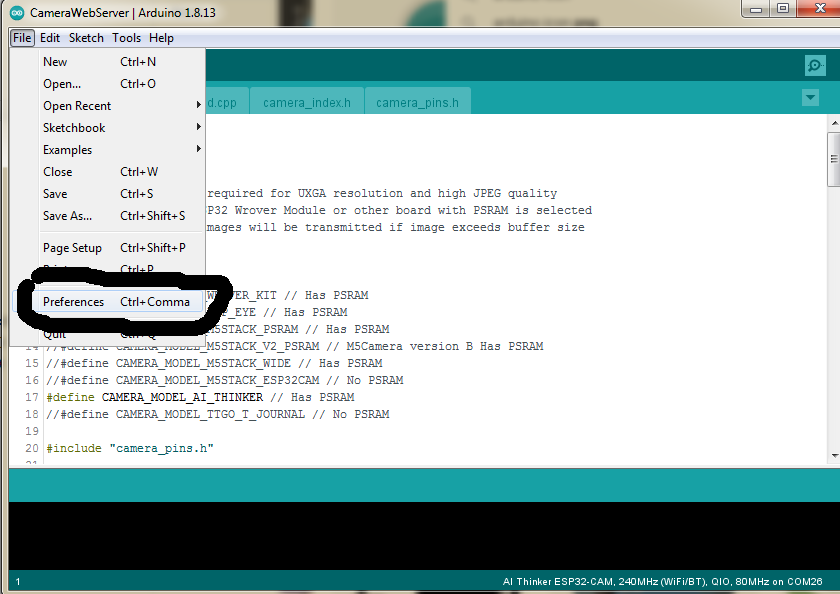
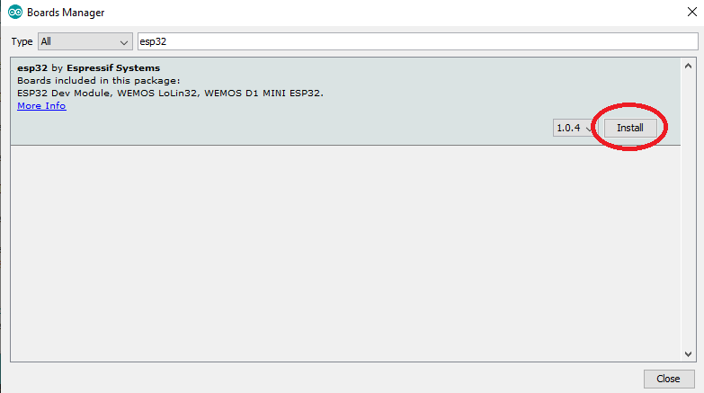
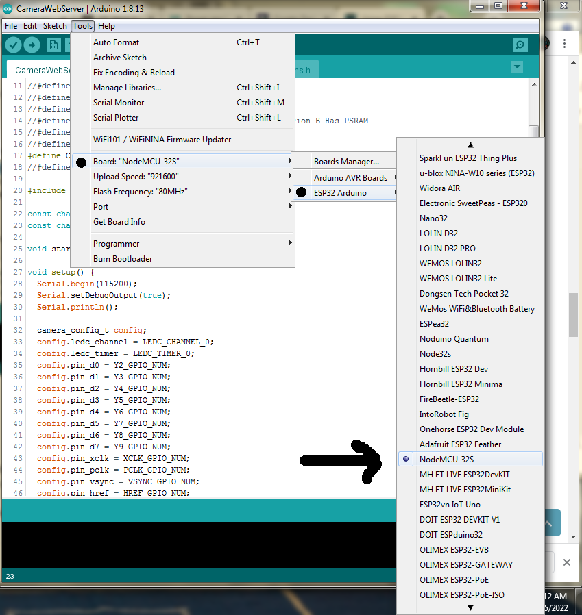
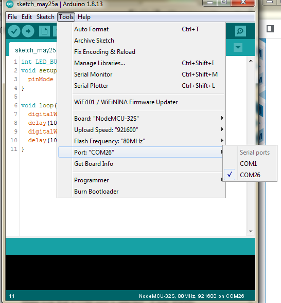

Using Real Electronics
Now that we have learned the basic ideas behind IoT technology, it's time to take our understanding into the real world, where things get a bit more complex, but way more fun!
Things will not always work!
That's ok - part of engineering and being a technologist is learning to find the source of a problem, and figuring out how to solve it with materials you have.
First, let's get acquainted with our board. We've chosen one of the more ubiquitous and easily-available development kits on the market: Espressif's ESP32.
It's got:
- WiFi
- Bluetooth
- Buttons
- LEDs
- USB connection for easy programming
- multi-us GPIO pins
- Built-in I2C & SPI support
In short - it can connect to and control a lot of electronics!

Connect
First, let's make sure we can connect and program this micro-controller.
Use the short USB wire to connect the ESP32 to your laptop. You should see a small LED light up. That indicates the controller is connected to power.
Arduino & Hello World/Blink
First, find the Arduino app on your laptop and bring it up: 
Arduino is an open-sourced platform for programming micro-controllers. We need to make sure it's setup to control your ESP32.
Board Manager
First, open the Prefences:

And add the following to the Board Manager URLs list (copy and paste):
http://dl.espressif.com/dl/package_esp32_index.json
Click OK to close the Preferences.
Now navigate to Tools->Board->Board Manager.
Type "esp32" in the search box and install the ESP32 library:

Then follow the below image to pick the correct Board, NodeMCU 32-S:

Choose Speed & COM Port
Make sure that a COM port is selected - it may already populate when you connect the board to the laptop:

If there's more than one choice, you may need to experiment to see which one is the correct one.
As for Upload Speed, leave it on whatever the default is.
Test Program
Before we do anything IoT, let's write a simple test program we can use to see that we can easily change the behavior of our board.
We will just blink the built-in user-controlled LED.
You can copy this code into the Arduino Sketch area:
// This is a comment
// LED_BUILTIN is pin 2 on the ESP32
// Uncomment below if your Arduino doesn't recognize LED_BUILTIN
// int LED_BUILTIN = 2;
// setup() function - called once, when ESP32 board is powered up / reset
void setup() {
// Set Pin 2 as an output I/O pin
pinMode (LED_BUILTIN, OUTPUT);
}
// loop() function - called over and over so long as ESP32 is running
void loop() {
// Turn power on in Pin 2
digitalWrite(LED_BUILTIN, HIGH);
// Wait 1000msec (1sec)
delay(1000);
// Turn power off in Pin 2
digitalWrite(LED_BUILTIN, LOW);
// Wait 1000msec (1sec)
delay(1000);
} // and repeat...
Next, compile the program to make sure you followed the above instructions properly:
Compile & Upload
See instructions here
Test
After that you should start seeing a new LED light blinking on your board.
You can mess around with the delay() times to make the LED flash longer or more frequently, just to get comfortable with the programming environment.